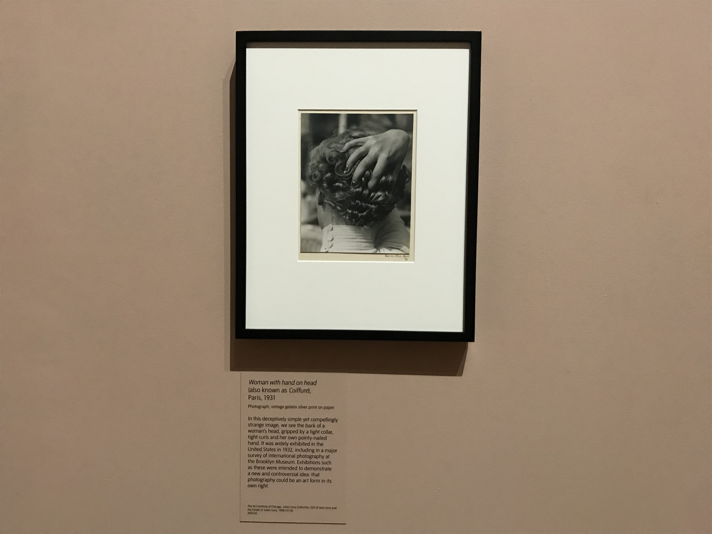
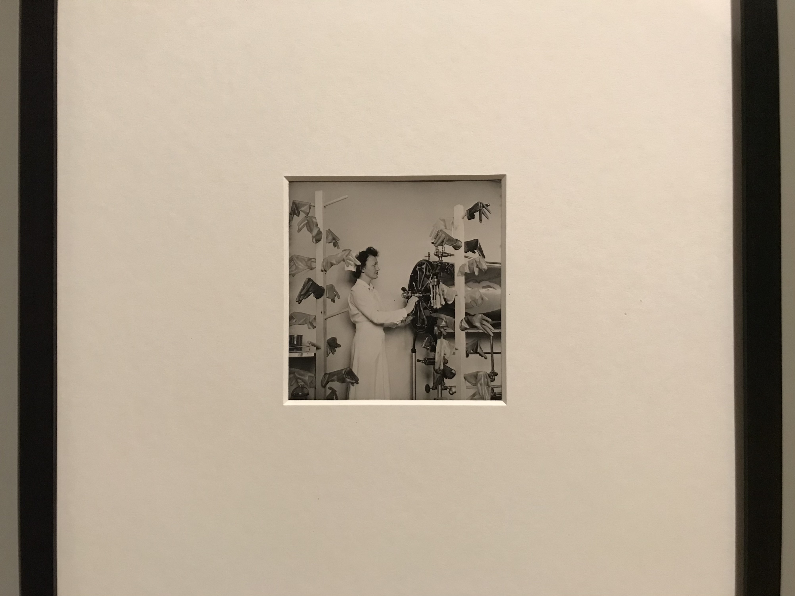
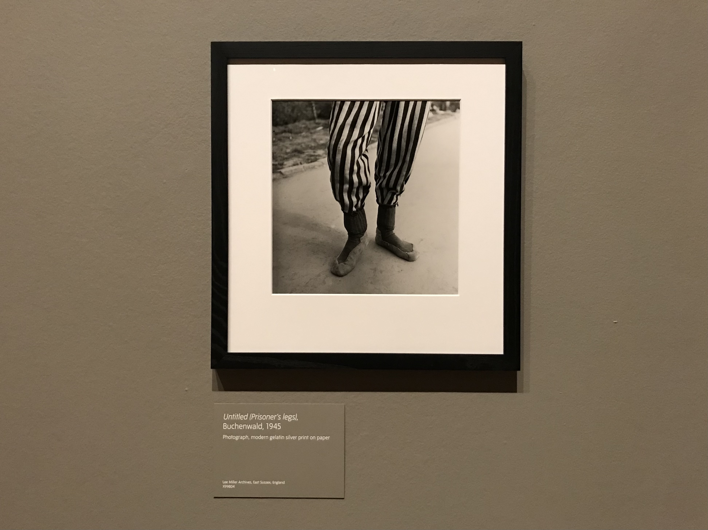
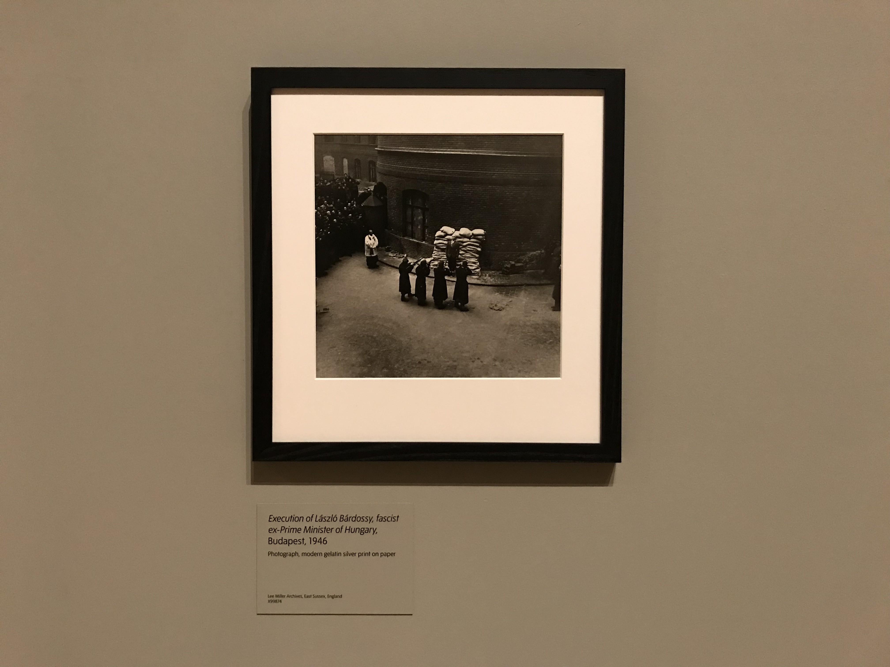

woman with hand on head (also known as Coifure)
1931

surgical gloves, Churchill hospital
1943

untitled (prosoner's leg), Buchenwald
1945

execution of László Bárdossy, fascist ex-prime minister of Hungary,
Budapest
1946
“it was matter of getting out on a damn limb and sawing it off behind you." - lee miller